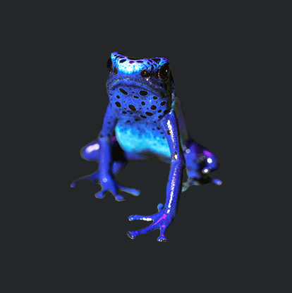
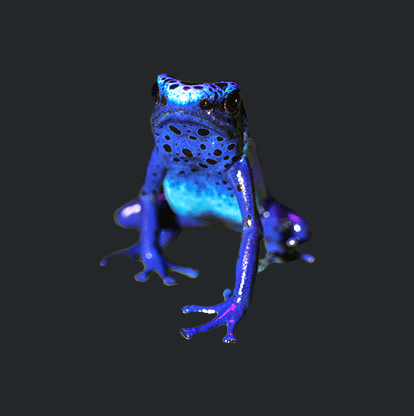

Species
Black
Rhinoceros
Black Rhinoceros Mountain
Gorillas Sumatran
Elephant Sumatran
Tiger
Status
A critically endangered species due to poaching and habitat loss.
Efforts are being made to protect the remaining populations,
but the species continues to face significant threats.
Conservation measures and international cooperation are essential for its survival.
A critically endangered species due to poaching and habitat loss.Efforts are being made to protect the remaining populations,
but the species continues to face significant threats.
Conservation measures and international cooperation are essential for its survival.
Efforts are being made to protect the remaining populations,
but the species continues to face significant threats.
Conservation measures and international cooperation are essential for its survival. Classified as critically endangered.
With a population of around 1,000 individuals,
their survival is threatened by habitat loss, poaching,
and political instability.
Conservation efforts and strict protection measures
have shown positive results in recent years,
but continued efforts are needed to ensure their long-term survival. A subspecies of Asian Elephant found in Sumatra, Indonesia.
With habitat loss due to deforestation, human-elephant conflict,
and illegal activities as key threats,
the Sumatran Elephant is critically endangered.
Conservation efforts focus on habitat protection, conflict mitigation,
and combating poaching and illegal trade. A critically endangered subspecies found only
on the Indonesian island of Sumatra.
With fewer than 400 individuals remaining,
its main threats include habitat loss, poaching,
and the illegal wildlife trade.
Conservation efforts focus on protecting its habitats,
anti-poaching measures, and raising awareness for tiger conservation.
Species
African
Coelacanth
African Coelacanth Devils Hole
Pupfish European
Sturgeon Pondicherry
Shark
Status
A deep-sea fish species found in the western Indian Ocean.
It is considered a "living fossil" due to its ancient lineage and
unique physical features. Although rare, it is currently classified
as Least Concern on the IUCN Red List, indicating a relatively stable
population. Conservation efforts aim to promote sustainable fishing
practices and protect its habitat.
A deep-sea fish species found in the western Indian Ocean.It is considered a "living fossil" due to its ancient lineage and
unique physical features. Although rare, it is currently classified
as Least Concern on the IUCN Red List, indicating a relatively stable
population. Conservation efforts aim to promote sustainable fishing
practices and protect its habitat.
It is considered a "living fossil" due to its ancient lineage and
unique physical features. Although rare, it is currently classified
as Least Concern on the IUCN Red List, indicating a relatively stable
population. Conservation efforts aim to promote sustainable fishing
practices and protect its habitat. A critically endangered fish species found only
in the geothermal pool called Devils Hole in Nevada,
United States. With a small size and specialized habitat,
it faces threats such as changes in water chemistry and human
disturbances. Conservation efforts focus on protecting and managing
Devils Hole to ensure the survival of this critically endangered species. A critically endangered fish species found
in European rivers and coastal waters.
Overfishing, habitat loss, and pollution
have led to its severe population decline.
Conservation efforts focus on fishing bans,
habitat restoration, and captive breeding programs
to ensure its survival. A critically endangered shark species found
in the Indo-West Pacific. Overfishing, habitat
degradation, and targeted fishing for its fins
and meat have greatly reduced its population.
Conservation efforts aim to protect its habitat and
regulate fishing practices.


Species
The
Gharial
The Gharial Leatherback
Leatherback Philippine
Crocodile Round Island
Keel-scaled Boa
Status
A critically endangered crocodile species found
in India and Nepal. Its long, narrow snout and
specialized jaws distinguish it. Habitat loss, water pollution,
and illegal hunting are the main threats. The population
has significantly declined, with only a few hundred individuals
remaining. Conservation efforts involve habitat protection, captive breeding, and reintroduction programs.
A critically endangered crocodile species foundin India and Nepal. Its long, narrow snout and
specialized jaws distinguish it. Habitat loss, water pollution,
and illegal hunting are the main threats. The population
has significantly declined, with only a few hundred individuals
remaining. Conservation efforts involve habitat protection, captive breeding, and reintroduction programs.
in India and Nepal. Its long, narrow snout and
specialized jaws distinguish it. Habitat loss, water pollution,
and illegal hunting are the main threats. The population
has significantly declined, with only a few hundred individuals
remaining. Conservation efforts involve habitat protection, captive breeding, and reintroduction programs. Classified as vulnerable on the IUCN Red List.
Threats include habitat loss, pollution, climate
change, fishing gear entanglement, and poaching.
Conservation efforts focus on protecting nesting beaches
and promoting sustainable fishing practices. A critically endangered species native to the Philippines.
With a population of fewer than 250 individuals, it faces
threats from habitat loss, hunting, and fishing. Conservation
efforts focus on habitat protection, captive breeding, and raising awareness for its survival. a critically endangered snake species endemic
to Round Island near Mauritius. Its population
is declining due to habitat degradation, invasive
species, and predation. Conservation efforts aim
to restore habitats, control predators, and raise awareness for its protection.
Species
Black-faced
Spoonbill
Black-faced Spoonbill The
Kakapo Madagascar
Pochard Yellow-eyed
Penguin
Status
This endangered bird species faces threats
from habitat loss, pollution, and disturbance
caused by human activities.
Conservation efforts focus on protecting habitats,
international cooperation, and wetland restoration.
Continued monitoring and conservation actions are
essential for its long-term survival.
This endangered bird species faces threatsfrom habitat loss, pollution, and disturbance
caused by human activities.
Conservation efforts focus on protecting habitats,
international cooperation, and wetland restoration.
Continued monitoring and conservation actions are
essential for its long-term survival.
from habitat loss, pollution, and disturbance
caused by human activities.
Conservation efforts focus on protecting habitats,
international cooperation, and wetland restoration.
Continued monitoring and conservation actions are
essential for its long-term survival. The Kakapo, a critically endangered parrot from New Zealand,
is one of the world's rarest birds.
Conservation efforts aim to safeguard its habitat,
manage predators, and boost its small population
of approximately 200 individuals. The survival of
this unique species depends on ongoing conservation
actions and public backing. Critically endangered diving duck from Madagascar,
once thought extinct.
Less than 60 individuals remain due to habitat destruction.
Conservation efforts focus on protecting habitats and captive breeding. An endangered species found in New Zealand.
With a declining population, it faces threats
such as habitat loss, predation, human disturbance,
and disease. Conservation efforts focus on protecting
nesting sites and managing threats to ensure its survival.
Species
The
Axolotl
The Axolotl Chinese Giant
Salamande Golden
Mantella Poison
Dart Frogs
Status
The Axolotl, a unique salamander from Mexico,
is critically endangered due to habitat loss and pollution.
Conservation efforts focus on protecting remaining populations
through habitat preservation and captive breeding.
The Axolotl, a unique salamander from Mexico,is critically endangered due to habitat loss and pollution.
Conservation efforts focus on protecting remaining populations
through habitat preservation and captive breeding.
is critically endangered due to habitat loss and pollution.
Conservation efforts focus on protecting remaining populations
through habitat preservation and captive breeding. A critically endangered amphibian found in China.
It is the world's largest salamander,
reaching lengths of up to 1.8 meters (5.9 feet).
Threats such as habitat loss, pollution,
and overexploitation have led to its decline.
Conservation efforts are underway, but the species
remains at risk of extinction. Endangered frog species in Madagascar facing threats
from habitat loss and illegal pet trade.
Conservation efforts aim to protect remaining
populations and raise awareness for their
conservation needs. Snown for their vibrant colors and toxic skin,
are currently endangered.
Habitat loss, pollution, and illegal
pet trade pose significant threats
to their survival.
Conservation efforts are vital to protect their
habitats and raise awareness about
their importance.
 
